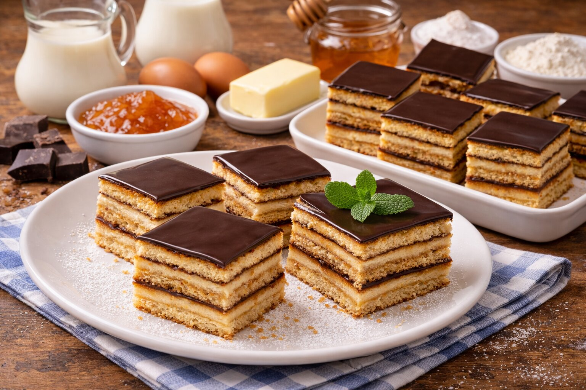

Suroviny – cesto
- 300 g kryštálového cukru
- 160 g masla
- 2 celé vajcia
- 4 lyžice medu
- 4 lyžice mlieka
- 900 g hladkej múky
- 2 kávové lyžičky sódy bikarbóny
Krém
- 1/2 l mlieka
- 4 lyžice hladkej múky
- 200 g cukru
- 250 g masla
- Lekvár podľa chuti
- Čokoláda na polevu
Postup
- Na miernom ohni roztopíme cukor, maslo, vajcia, med a mlieko.
- Vlejeme do múky so sódou bikarbonou a vypracujeme cesto.
- Rozdelíme na 8 platov a upečieme.
- Pripravíme krém z mlieka, múky, cukru a masla.
- Pláty striedame s krémom a lekvárom, nakoniec polejeme čokoládou.